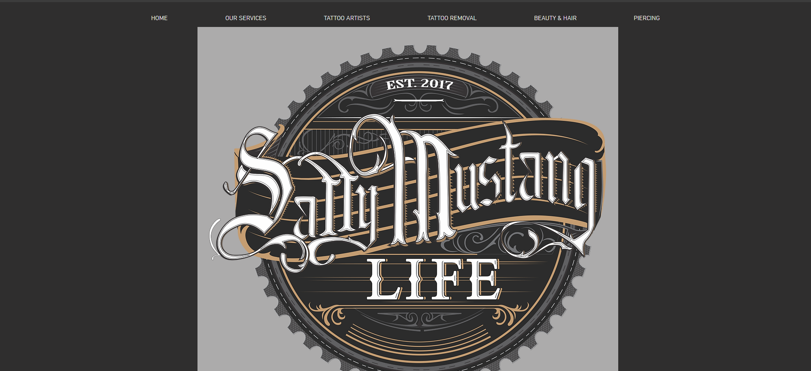

The interface is the visual elements that the user may interact with in order to use the digital product or service (UserTesting, n.d.). User interface design places the human using the digital media first and considers how the design of the interface should be centered around them. A UI designer considers how to utilize the various interface elements such as buttons, icons, layout, color etc. to provide the user with an interface that is friendly to interact with. The term “User Experience” was coined by cognitive scientist Don Norman, who described it “encompassing all aspects of the end user’s interaction with the company, its services and its products” (Lamprecht, 2023). This is a rather broad definition, but it sits at the very core of the subject. In the narrower scope of digital media, I view user experience and user interface as two sides of the same coin, because the user’s experience must be kept in mind when designing the interface. As we mentioned, the placing of the term “user” before interface and experience signifies that it must be built with the user’s best interests at heart and in doing so, creating an enjoyable experience.
“With great power comes great responsibility.”
UI/UX design plays a prominent role in dictating our experiences and interactions with digital products and services, as it has the power to delve into the mind of users and create a captivating and engaging experience. Ethical considerations go beyond the aesthetics and focuses on the impact of design choices on user’s mental and emotional state. While maximizing the satisfaction of the user is the primary goal of UI/UX design, it is paramount to consider ethical implications of design decisions and not only create an effective experience but also one that considers and does not detract from the well-being of the user.
Case Study

Sally Mustang Logo
The website we will be analyzing is the business website for the tattoo parlor, Sally Mustang. This website promotes the various services offered by Sally Mustang, which includes tattoos, piercings, tattoo removal, chiropractic treatments and a range of beauty treatments. Websites that represent a business are designed to portray the brand’s identity while providing the necessary information about its services to its customers.
Cookies and Web Data
Immediately when you enter the site, you are greeted by a window prompt, asking if you would like to accept the cookies. Web cookies are used by publishers to track users’ behavior, in programming terms, they are text strings that are placed on the client’s browser when it accesses a given server. The cookie is then transmitted back to the server to track user’s data. Commonly, the data gathered is used to display targeted ads that are based specifically on the user activity and preferences. For businesses, they can be used for analytical purposes and track which pages are visited, how long visitors stay on the site and how they interact with the content. This data assists website owners on how to improve site performance and marketing of their services. While cookies are often used to enhance the user experience, they also raise privacy concerns. (Cahn, et al., 2016)
Users entrust sensitive information to these digital platforms and designers bear the responsibility of ensuring the data collected is stored and used in a transparent and ethical manner. In the UI/UX design, there should always granular controls available for the user to edit the data that they want to be collected or have an option to decline the collection of any data. The URL of the Sally Mustang website allows users to see which parties are using cookies and where their data is going, it also has the option for the user to delete these cookies. This practice places the user’s interests first above analytics and empowers the user therefore creating a more trustworthy experience.
Site Data Management
Ethical Use of Images
In order for Sally Mustang to grow as a business, displaying a portfolio of work performed by their tattoo artists is a priority. On their website, they have a separate page specifically for this purpose. Hovering over the “Tattoo Artist” heading on the navigation tab, prompts a dropdown, displaying the names of their tattoo artists. This is a good UI practice as it allows the customer to navigate directly to their favorite tattoo artist.
Sally Mustang Artists
If the customer is unfamiliar with each artist, they can navigate to the general tattoo artist page, where they are all displayed.
By clicking on each artist, the user can then view their portfolio of work done. There are ethical implications that the owners of the website must consider here. The images that are displayed are the tattoos done on other people’s bodies. These people must consent to having their bodies displayed on a digital platform with full knowledge of how the images will be used and shared. Tattoos can also be personal and deep meanings attached to it that people may not be comfortable sharing. If they are but do not want their identities revealed, it is then the responsibility of the artist to blur and crop the face and identity of the individual.
Sally Mustang Artists
This is the necessary precautions necessary to respect the individual’s body and rights, but the tattoo artists are also protected. Especially if an individual wishes to tattoo something that provocative and inappropriate, the tattoo artist has a right to refusal, to protect themselves and the image of the brand.
Accessiblity
Accessibility for digital platforms refers to the practice of designing and developing websites in a manner that ensures equal access and usability, regardless of disability. This is done to create a user-friendly experience that is both inclusive and barrier-free. For interface elements such as images, it is good practice to create alternative text for each image file that is used on the website. Alternative text should be descriptive to assist screen reader tools to describe the image to visually impaired users. Alternative text is an element the Sally Mustang website lacks, if an impaired person were using a screen reader, they would be unable to understand what tattoos are being displayed on the website and detracts from their experience. It does succeed in implementing its semiotic elements into the web page and this is picked up by the assisted screen reader when clicking on buttons or navigational menus. (Lawson, 2019)
I believe that along with accessibility, ethical use of UI/UX design needs to account for inclusivity. For a tattoo parlor, Sally Mustang displays their work across a diverse group of people, and this helps to show possible clients how a tattoo done by them will look on their skin complexion. This assists the customer in finding out who among their tattoo artists are capable of tattooing on different complexions, this allows Sally Mustang to have a larger market of customers that consists of a diverse and multicultural group of people.
Interface
The interface of the website displays a sleek and artisanal design, taking on a grey and steampunk-esque aesthetic that is clearly representative of the brand and service provided. Images are provided of how the parlor looks and it is visible that the UI/UX designers wanted the website to resemble the parlor to give the users a similar experience when they browse the site. The interface design is simple – At the top is the navigational tab, displaying the various pages that the website consists of. The home page gives a small introductory paragraph about the parlor, as there is not much that needs to be said and the contact details are at the bottom of the home page, along with iframe of their locations on google maps. The navigation tab takes the user to the page, displaying information about the specific service they require.
Having a simple user interface contributes greatly to the user experience. Cognitive load refers to the mental effort required to process information, make decisions, and complete tasks within an interface. As UI/UX designers, we must be aware of the impacts a high cognitive load can have on the user. High cognitive load hampers the user experience when they are bombarded with choices and information, this leads to users often disengaging with the website content and thereby being unsatisfied. When designing for a reduced cognitive load, we must prioritize simplicity and clarity – minimizing visual clutter and useless elements creates a sleek interface and having a clear information hierarchy to guide user’s attention. Having a consistent flow between UI elements creates a sense of familiarity within the user and in doing so empowers them to take control and navigate the site with ease.
Sally Mustang succeeds in creating an effective and ethical interface that reduces the cognitive load on the user. Interface is simple and clear with minimal clutter content. The website is easy to navigate and does not require complex interactions. The flow between the interface elements are straightforward and guides the user to across the webpages, maintaining user engagement.
Conclusion
By analyzing Sally Mustang website, we see first-hand how ethical use of UI/UX design creates a foundation between the user and platform, whilst maintaining a satisfactory experience for the user. The website demonstrates transparency and respect for the user’s privacy and in doing so builds user trust in the brand.
While the website lacks alternative text for the images displayed, it succeeds in representing diversity and inclusivity in its portfolio. Thereby catering to a wider range of possible clients. The interface has a balance between aesthetic and functionality, which contributes to reducing the cognitive load on the user and creating an engaging experience.
Successful UI/UX design is rooted in understanding the user’s needs and mental states when using a digital platform. It is based around principles of transparency and honesty and focusses on placing the user’s interests first. Sally Mustang’s website is an example of ethical usage UI/UX practices that fosters a straightforward and overall satisfying experience.
References
Cahn, A., Alfeld, S., Barford, P. & Muthukrishnan, S., 2016. An Empirical Study of Web Cookies. WWW '16: Proceedings of the 25th International Conference on World Wide Web, pp. 891- 901.
Lamprecht, E., 2023. The Difference Between UX and UI Design: A Beginner’s Guide. [Online]
Available at: https://careerfoundry.com/en/blog/ux-design/the-difference-between-ux-and-ui-design-a-laymans-guide/
[Accessed 03 April 2024].
Lawson, B., 2019. How A Screen Reader User Accesses The Web: A Smashing Video. [Online]
Available at: https://www.smashingmagazine.com/2019/02/accessibility-webinar/
[Accessed 04 April 2024].
UserTesting, n.d. UI vs UX. [Online]
Available at: https://www.usertesting.com/resources/topics/ui-vs-ux
[Accessed 03 April 2024].